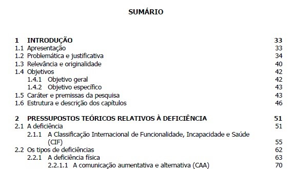
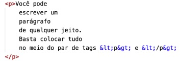
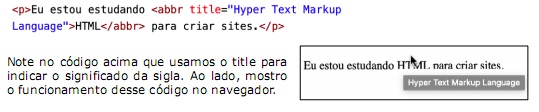

.png)
HTML / CSS
Cabeçalhos (h1 a h6)
Cabeçalhos (<h1></h1> a <h6></h6>): São usados como títulos sendo o h1 o titulo mais importante e indo até h6. Como exemplo temos a imagem de um sumario abaixo:

No caso acima, h1 seria o Sumario, h2 seriam os títulos dos capítulos (1, 2...), h3 seriam os subtítulos (1.1, 1.2, 2.1)... e assim por diante.
Parágrafos (<p></p>): Indica inicio e fim de parágrafo e seguem a seguinte forma:

Observe que fica como uma caixa, mais organizado e bem delimitado, dando pra ver onde começa e onde termina um parágrafo.
Outras tags de texto interessantes: Quebra de linha <br>, linha horizontal <hr> (sem fechamento).
Códigos
Para inserir alguns caracteres, será necessária a utilização de alguns códigos pq os caracteres em si são utilizados na codificação html. É o caso de > ou <. Para eles existem &+gt; e &+lt; (com ; no final). Tb temos códigos, por exemplo para indicadores monetários, marca registrada, copyright, trade mark, setas e até espaço em branco.
Emogis (site recomendado: emojipedia.org)
Outra coisa que você pode adicionar às suas páginas são os emojis, onde cada símbolo possui um código Unicode. Para uma pesquisa mais precisa e atualizada, acesse o site da emojipedia.org.
Favicon
Favicon é im tipo de icone de identificação no favoritos. Basta incluir uma tag <link>, digitando apenas a palavra link em uma linha em branco e escolhendo a opção link:favicon. Sites recomendados: iconarchive, favicon.cc e favicon.io. baixas os ícones sempre com a extensão .ico.
Tags de marcação de texto
- Negrito: <strong></strong>
- Itálico: <em></em>
- Marca-texto: <mark></mark>
- Texto pequeno: <small></small>
- Texto riscado: <del></del>
- Texto sublinhado: <ins></ins>
- Texto sobrescrito: <sup></sup>
- Texto subscrito: <sub></sub>
- Trecho de cógidos: <code></code>. Aqui vale lembrar de uma outra tag: <pre></pre>, que vai manter o texto pré-formatado, exatamente da mesma maneira na qual ele foi digitado, incluindo quebras de linhas, espaços e tabulações.
- Citações curtas: <q></q>
- Citações longas:<blockquote></blockquote>
- Abreviações: <abbr></abbr> cria explicações das abreviações (ver abaixo).
